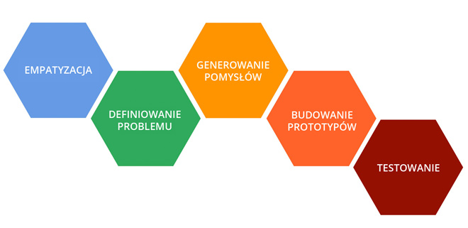
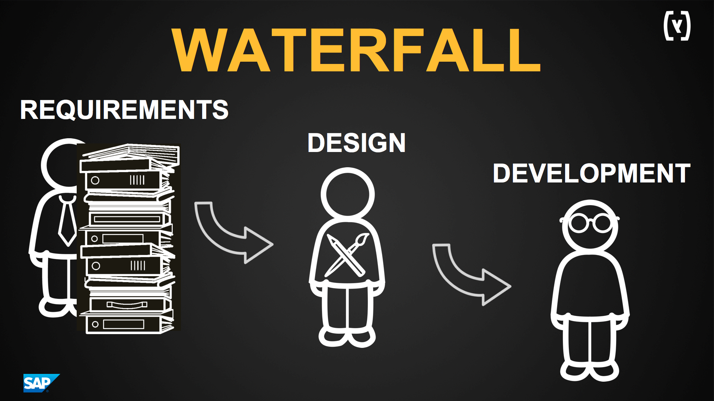

web developer
scrum master
LEAN
UI/UX expert
DESIGN THINKING
DESIGN THINKING

Scrum & Design Thinking
Uzytkownik w centrum
Iteracje - szybki feedback
Skomplikowane problemy rozbite na male kroki
Fail fast (and cheap)
Jak to mozliwe?

"Dokumentacja"
Szablony
Szkielety
Sz..pecifikacje
ROZBIEZNOSCI